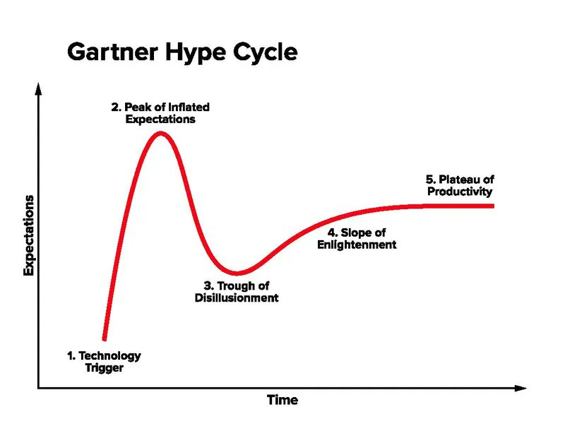
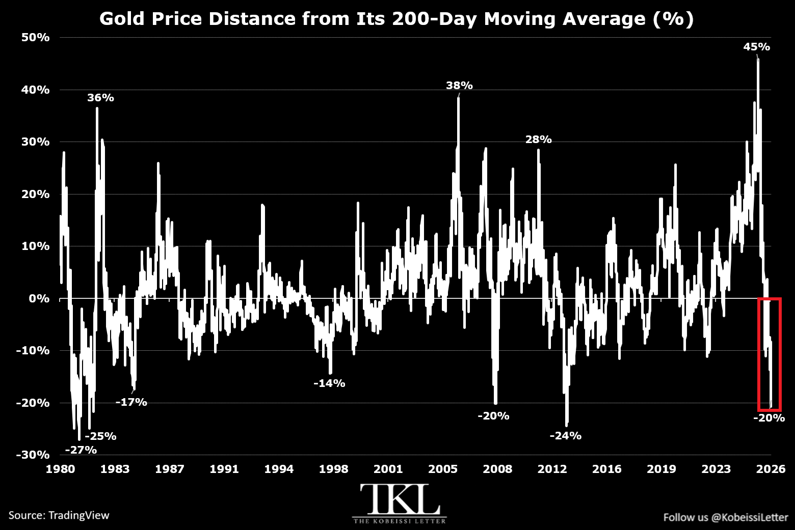
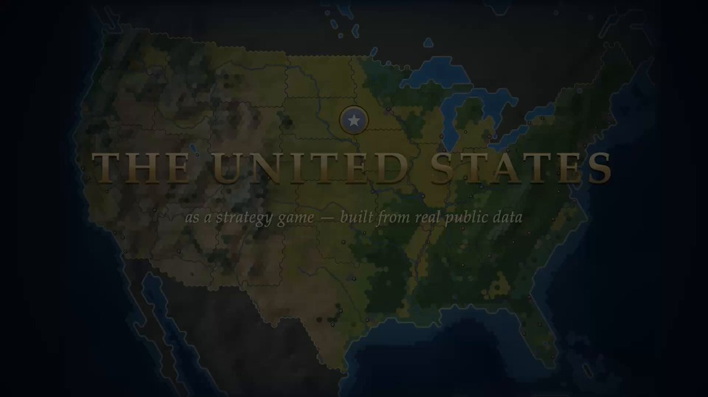
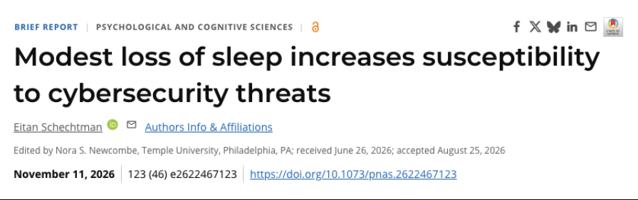

La FCC autorizza i data center orbitali di SpaceX, Amodei respinge l'«handoverism», l'oro perde il 37% dal picco e i dazi affondano il Nasdaq prima della rimonta. E un'ora di sonno in meno fa cliccare il 13% in più sul phishing
Brief di giovedì 26 novembre 2026 · lista X «Best» · 214 post da 48 account, dalle 13:33 del 25/11 alle 13:31 del 26/11 (ora di Roma)
🦃 Oggi in America è Thanksgiving, e Tyler Cowen apre la giornata con il simposio della Free Press su ciò per cui essere grati. Il regalo più vistoso arriva però da SpaceX, che darà un'azione a ogni conto Invest America intestato a un bambino, con Musk che ne aggiunge una di tasca sua: due azioni per bambino. Nelle stesse ore l'oro vive uno dei crolli peggiori della sua storia, l'inflazione sale e qualcuno sussurra che RSA abbia i giorni contati. Chi festeggia e chi fa i conti.
Brendan Carr, presidente della FCC, lo annuncia in maiuscolo: «data center nello spazio». L'agenzia ha approvato la richiesta di SpaceX per un milione di satelliti, moduli di calcolo orbitali, la costellazione Starmind, alimentata a energia solare. Ejaaz si spinge a stimare circa 250 GW, attivi 24 ore su 24 con la fonte di energia più economica. Per dare una scala: se 1 GW vale circa 450.000 famiglie italiane (🧮 ff.149.2 Una questione di ore…), 250 GW sono più di 110 milioni di famiglie. Sulla Terra intanto il calcolo si riprezza: Anthropic starebbe chiudendo un contratto con SpaceX per 50.000 GPU H200, ormai vecchie, e secondo NewStreet Research SpaceX taglia i prezzi dei cluster piccoli per allinearli a quelli grandi, tra 10 e 12 dollari per GPU all'ora. Peter Diamandis nota che SpaceX si prende sui chip un rischio che i produttori affermati rifiutano, per via del CAPEX, e Katherine Boyle di a16z prevede che la sua eredità saranno centinaia, se non migliaia, di aziende fondate da chi è passato per la «scuola di Elon Musk», dai droni agli ipersonici. Scott Alexander, ospite di Dwarkesh Patel, usa proprio SpaceX come limite inferiore di ciò che una superintelligenza potrebbe fare: qualcosa più bravo di Musk a ottimizzare, davanti alle 10.000 parti della catena di fornitura di un razzo (🐒 ff.36.1 Esempi di superintelligenza?).
Axios scrive che i rivali di Anthropic contestano la sua visione di «cedere l'agire umano» all'AI, e Dario Amodei risponde con un lungo post (oltre 18.000 like, 7,6 milioni di visualizzazioni): è «assurdo» pensare che voglia «arrendere il libero arbitrio umano» alle macchine. L'argomento è antico: da Greci e Romani in poi, gli autocrati promettono decisioni più rapide della democrazia, ma anche se fosse vero «non dovremmo mai sacrificare legittimità e autodeterminazione sull'altare dell'efficienza o della sicurezza». Sull'automazione dei singoli compiti la sua posizione è più sfumata, e ammette un limite concreto: Anthropic non ritiene sicuro che Claude costruisca da solo i modelli successivi, senza una supervisione umana significativa. Bill Gurley dà un nome alla questione, «handoverism», il tema più importante dell'AI, e si dichiara del tutto contrario. Mustafa Suleyman scrive che stiamo attraversando una soglia e che sicurezza e allineamento sono l'unica cosa che conta, mentre Ethan Mollick nota che gran parte del resto di Microsoft continua a trattare l'AI come una tecnologia normale. Sam Altman scopre una parola nuova, «hyperstitioning»: Will Depue, ex ricercatore di OpenAI, ipotizza che Anthropic stia facendo avverare AGI, auto-miglioramento ricorsivo e corsa all'AI a forza di parlarne. Mollick immagina il seguito, laboratori che smettono di rilasciare i modelli migliori e diventano monopoli dell'intelligenza, magari regolati, entrando in finanza e biotech. E Diamandis chiede a che punto un CEO consegnerà le decisioni all'AI, non per scelta ma perché i concorrenti lo fanno già. Harari lo temeva in Nexus (🕊️ ff.106.3 Nexus e Harari).
x.com/DarioAmodei/status/2125656399392690605
C'è una voce che gira da una decina di giorni. Andrew Curran la ritrova sul blog di Scott Aaronson: sia Anthropic sia OpenAI avrebbero modelli capaci di rompere RSA, e visto quanto si somigliano i loro risultati matematici recenti, se ce l'ha uno probabilmente ce l'ha anche l'altro. Nessuna conferma. Igor Babuschkin, fisico, la mette in termini precisi: il pericolo immediato per la crittografia arriva meno dai computer quantistici e più da una scoperta matematica fatta da un LLM che permetta di fattorizzare in tempo polinomiale su un computer classico. Nessuno ha dimostrato che sia impossibile, e un algoritmo del genere non implicherebbe P=NP; se invece un LLM dimostrasse che non si può fare, «sarebbe fantastico». Numeri primi, di nuovo (🔢 ff.158.1 Numeri primi e come cercarli). Intanto le violazioni vere non mancano, qualunque ne sia l'origine: il FinCEN, che custodisce le segnalazioni di operazioni bancarie sospette, ha subito un accesso non autorizzato a «un sottoinsieme limitato» dei suoi sistemi, e secondo il New York Times un attacco ha esposto informazioni non classificate di CIA e ODNI. Matt Hougan ne conclude che la difesa informatica diventerà un'industria enorme. OpenAI risponde sul fronte della riservatezza con Private Inference, calcolo confidenziale in cui prompt e risposte restano protetti anche durante l'elaborazione, in test con pochi clienti. E il giorno giusto per ascoltare Moxie Marlinspike di Signal, ospite di Tyler Cowen su crittografia, privacy e sorveglianza di massa.
Mercoledì è una giornata da montagne russe. L'amministrazione Trump propone nuovi dazi a 14 partner commerciali: Cina al 20%, forse fino al 40%, Vietnam fino al 35%, India, Taiwan e Corea del Sud fino al 25%. Pochi minuti dopo l'inflazione PCE di ottobre sale al 3,8%, il core al 3,3% contro il 3,2% atteso, e le probabilità di un rialzo dei tassi a dicembre superano il 97%: dodici mesi fa i mercati si aspettavano tre tagli nel 2026. Il Nasdaq 100 arriva a perdere oltre il 4,5%, poi il Dow Jones cancella un calo di 1.100 punti e chiude in positivo, e Anthropic torna sopra gli 83 dollari del prezzo di IPO. Tom Lee ricorda che nel 2018 il Nasdaq 100 chiuse a zero e l'S&P 500 a −4%, senza una storia di crescita come l'AI, e si compra 500.000 dollari per ciascuno dei suoi due ETF. Il credito è meno ottimista: il bond 2032 di CoreWeave rende il 16,9%, contro il 9,4% di giugno, e i CDS implicano una probabilità di default oltre il 70% in cinque anni, mentre Cathie Wood scommette che quegli spread rientreranno. Matt Hougan riprende lo schizzo che Jackie Fenn disegnò da analista al secondo anno in Gartner nel 1995: per lui l'AI sta precipitando verso la «valle della disillusione», e la risalita sarà un'occasione generazionale. Azeem Azhar e il suo team hanno studiato quasi 800 tecnologie in tre secoli per capire cosa guida boom e crolli. Una bolla? Ce lo chiedevamo già (🧩 ff.88.1 Una bolla finanziaria?).

Il bene rifugio si è dimenticato di esserlo. L'oro è sceso del 37% dal picco intraday di gennaio, il calo più ampio in dodici mesi dai primi anni Ottanta, e ora quota il 20% sotto la sua media mobile a 200 giorni: non succedeva da giugno 2013. A gennaio era il 45% sopra, il massimo dagli anni Settanta. Bravos Research ricostruisce la dinamica in un thread di 28 post: a gennaio 2026 il CME ha sostituito i margini fissi in dollari con margini percentuali tra il 5% e il 9%, costringendo chi era a leva a versare più garanzie o a vendere, mentre oltre 1.000 tonnellate della domanda arrivano dalle banche centrali, compratori poco sensibili al prezzo. Sul tavolo anche oltre 10.000 miliardi di dollari bruciati quest'anno e uno scenario a 2.500 dollari se si ripetesse il −35% del 2011. Non va meglio alle cripto: il bitcoin scende sotto i 57.500 dollari, ETH si avvicina ai 1.600, mezzo miliardo di posizioni a leva liquidate in 24 ore. Intanto la massa monetaria M2 americana tocca il record di 23.530 miliardi, +5,9% su base annua. Oro, argento, mirra, birra e Bitcoin: la classifica dei beni rifugio cambia spesso (🪙 ff.50.2 Oro, argento, mirra, birra e Bitcoin).

Dopo la risposta di Amodei, il post più amato della giornata (oltre 15.000 like) è un gioco. Andrej Karpathy ha chiesto a Claude di popolare una mappa in stile Civilization con dati reali degli Stati Uniti: Opus 5.5 ha scaricato e analizzato 31 fonti pubbliche (Census, BLS, NOAA, USGS, FAA, CDC e altre) e dopo 7 ore e 45.000 righe di codice la mappa funziona, su una griglia esagonale da 25 km. Il PIL diventa oro, i distretti di una città sono le sue vere specializzazioni industriali (San Jose ha un Campus, Detroit è «Motor City»), le meraviglie sono parchi e università scelti con regole pubblicate. Claude ha saltato qualche Stato, e a Karpathy è rimasta metà della quota settimanale. Modellare il mondo, giocando (📐 ff.132.3 Misurare e modellare il mondo). Sul fronte opposto, quello della misura, Jason Wei presenta un benchmark di compiti ingegneristici lunghi, dall'ottimizzare kernel al progettare un aereo, in cui i modelli spendono in media un centinaio di milioni di token senza segni di saturazione, e i modelli open source scalano peggio con il calcolo al momento del test. Mollick osserva che nomi e numeri dei modelli non hanno mai detto così poco sulle loro capacità, e Perplexity lancia Time Machine, che mostra a un modello il web com'era in una data a scelta, per allenare agenti a prevedere il futuro.

x.com/karpathy/status/2125779541952246039
Per chi dorme poco (e qui qualcuno si sente chiamato in causa), la giornata offre tre avvertimenti. Uno studio su PNAS di Eitan Schechtman mostra che perdere un'ora di sonno con il passaggio all'ora legale aumenta del 13% i clic sulle email di phishing, su 11.218 persone: la privazione di sonno diventa un rischio di sicurezza informatica, e si torna al tema precedente. Siim Land riprende uno studio in cui 20 adulti sani, dopo una sola notte in bianco, mostrano alla PET un aumento del 5% di β-amiloide in 19 casi su 20, la proteina legata all'Alzheimer; lui stesso precisa che una notte non basta a causare la malattia. Bryan Johnson sostiene che dormire 6 ore invece di 8 spinga il sistema vicino al 100% della capacità, moltiplicando errori e «debito biologico». Johnson ricorda anche che gli organi invecchiano a velocità diverse: un organo «vecchio» alza il rischio di morte del 56%, tre o più di 16,5 volte, e i più pesanti sono sistema immunitario (+95%) e cervello (+73%). David Sinclair segnala un orologio epigenetico del gruppo di Gladyshev, basato sulla metilazione del DNA letta con sequenziamento long-read, con un errore medio tra 2,8 e 5,7 anni, e un dato su The Lancet: su 193 sperimentazioni di farmaci contro l'invecchiamento, solo 41 hanno arruolato persone sane o a rischio, perché la FDA non classifica l'invecchiamento come malattia. Tim Ferriss chiude il cerchio: i dati dei wearable non mancano, manca l'ultimo miglio. Sette consigli per dormire bene li avevamo già messi in fila (💤 ff.35.4 Super-dormita e super-focus).
